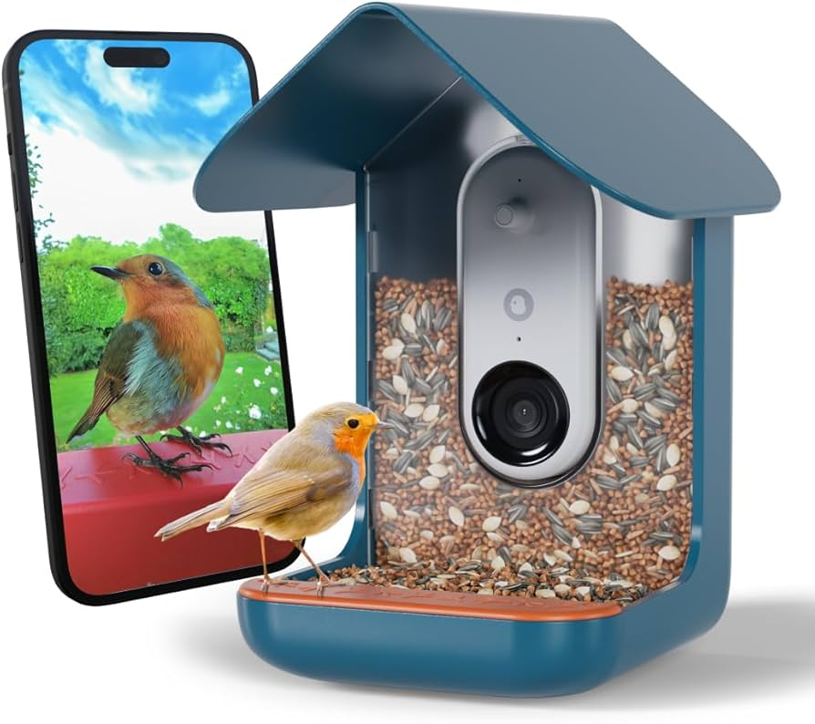
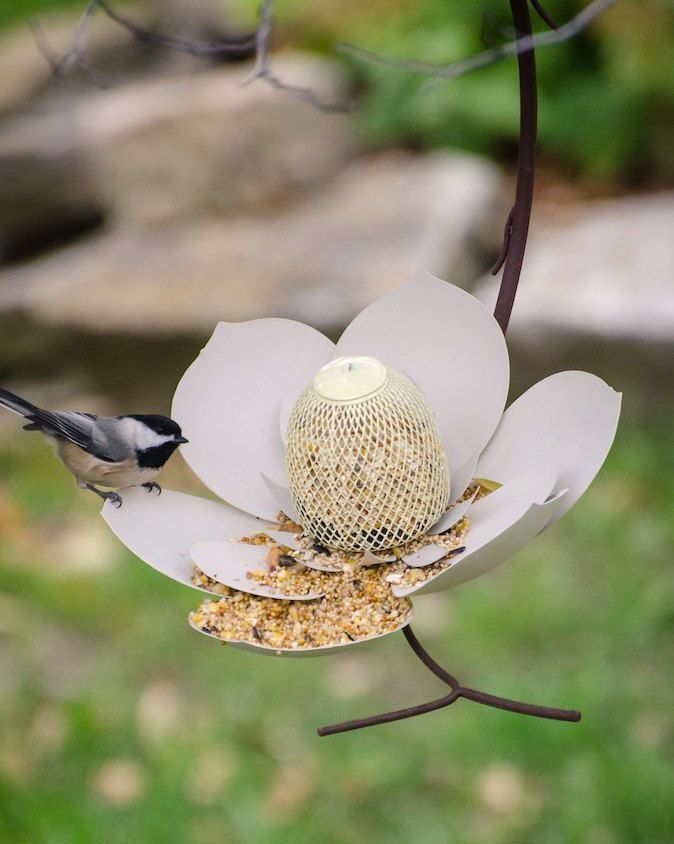

<div class="textcontainer">
<br></br>
<h2>Week 1: Introduction to PS70 + Final Project Brainstorming</h3>
<p class = "margin"></p>
First day of class! We received an introduction to the class and its teaching staff, including a sneak peek / inspiration into what our final projects could look like. During lab, we learned how to navigate GitHub and began customizing our own websites using HTML and CSS on Sublime Text.
<br></br> For this week's assignment, I spent quite a few hours trying to achieve my vision of having a bird-themed home page. I am very proud of it though! I did utilize ChatGPT to help me figure out quite a few things (I am new to HTML!). I used it to change the background image, make it stay the same scale, add the bird images to different locations, and some other minor details. I definitely think that taking time to edit my homepage really helped me understand the basics of HTML and how the different commands worked.
<p class = "margin"></p>
<h3>Final Project Ideas</h4>
<h4>Idea 1: Birding Camera Trap </h4>
<p class = "margin"></p>
A bird feeder with a camera that takes pictures/videos when birds come into frame. Identifies them. Records the number of times the bird appears/reapppears within a 10 minute span? REcords the number of sightings of each species per day? Also identifies sound? Similar to the Bird Buddy smart bird feeder but like DIY! Also I want the bird feeder to be a fun shape. Flower-shaped maybe?
<br></br>


<p class = "margin"></p>
</div>